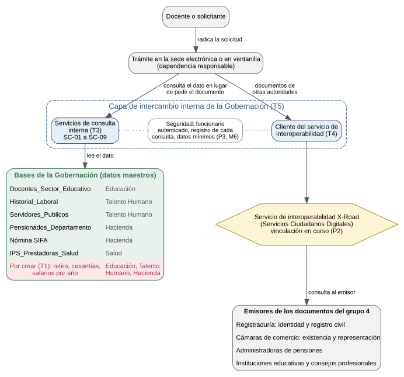
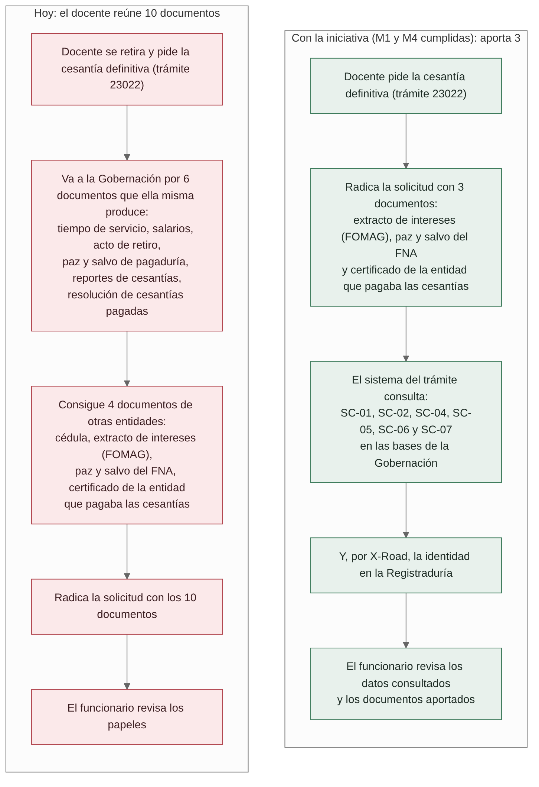

Gobernación del Huila · registro del SUIT al 31 de octubre de 2026
Qué documentos podría dejar de pedir la Gobernación del Huila
Escoge un trámite y verás cada documento que hoy se le pide al ciudadano, quién lo expide, si la Gobernación ya tiene el dato en sus bases y qué haría falta para consultarlo en lugar de pedirlo.
323documentos exigidos en los 85 trámites
55los expide o guarda la propia Gobernación
1de esos 55 tiene el dato completo en una base declarada
129podrían dejar de pedirse si se cumple la iniciativa (73 sin emisor variable; 62 en el escenario estricto)
Consulta por trámite
Los trámites aparecen con su código del SUIT. El número a la derecha es cuántos documentos piden y cuántos podrían dejar de pedirse con la iniciativa.
Cargando los datos de la matriz…
Servicios de consulta diseñados
Cada servicio reemplaza un documento: recibe la cédula (o el código del prestador) y devuelve los datos que hoy certifica el papel. Al lado de cada dato está la tabla y el campo de la Gobernación de donde saldría, según su documento de datos maestros.
Existe en la base declaradaDeclarado, por confirmarNo declarado
Hoja de ruta
Las 17 acciones de la iniciativa, en meses desde que la Gobernación la adopte. Toca una barra para leer la acción completa.
Político-legalOrganizacionalSemánticoTécnico
Paso 1: completar y conectar el datoPaso 2: dejar de exigir el documento
P1 · Político-legal · Adoptar un acto interno que instruya a las dependencias a no exigir cada documento desde que su consulta exista y a consultarlo.
Cómo se conectaría
El trámite consulta una capa de intercambio interna que lee las bases de la Gobernación; los documentos de otras autoridades se consultan por el servicio nacional de interoperabilidad, al que la Gobernación aún no está vinculada.

Arquitectura propuesta. La fila sombreada en rojo agrupa los datos que hoy no tienen base declarada.

Cesantía definitiva para docentes oficiales (trámite 23022): hoy y con la iniciativa cumplida.